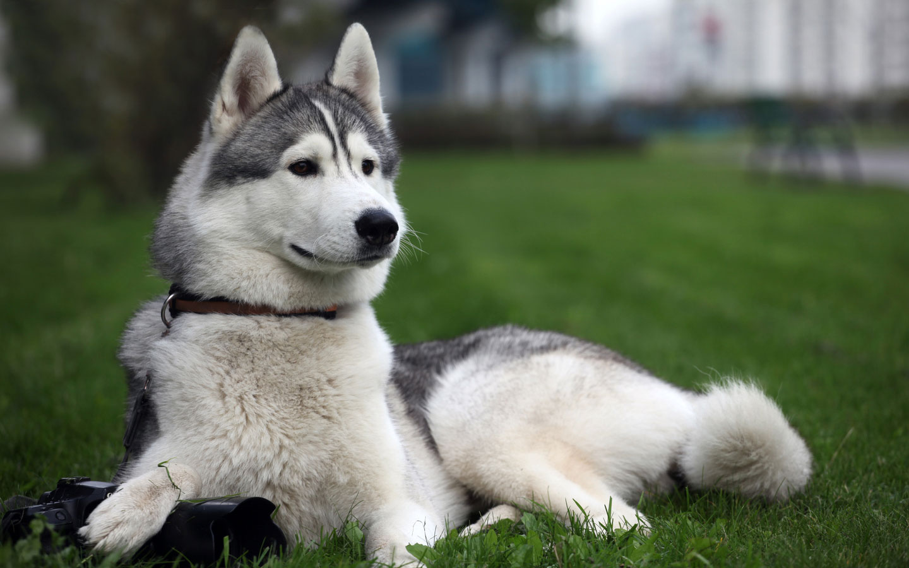

Сибирский Хаски
- Продолжительность жизни: 12-15 лет
- Окрас шерсти: разрешаются все цвета от черного до чисто-белого. Обычно разнообразие отметок на голове, в
ключая четкие маски, которых не может быть у других пород
- Рост кобеля: 54–60 см
- Рост суки: 50–56 см
Сибирский хаски – северная ездовая собака, среднего роста, со стоячими ушами, лисьим хвостом.
Пропорции тела и внешний вид отражают основной баланс силы, скорости и выносливости.
Эти собаки предназначены для перевозки легкого груза со средней скоростью на большие расстояния.
У них часто встречаются глаза голубого цвета. Характерная особенность хаски – густая, шерсть, которая не имеет запаха.
Хороший природный иммунитет защищает хаски от инфекционных заболеваний. Характер жизнерадостный, энергичный, уравновешенный.
Безопасность. Хаски самая добродушная из всех пород собак. Исторически, агрессивные собаки в условиях крайнего севера безжалостно уничтожались.
Тактильные ощущения. Шерсть недлинная и очень густая, она не имеет запаха. На ощупь напоминает песца. Легко вычесывается во время линьки.
Душевный контакт. Хаски отзывчивы на ласку и щедры на проявления своего хорошего расположения. Не требуют служебной дрессировки, при правильном подходе, легко обучаются. Неназойливы, но любят быть в центре внимания.
Уникальность хаски в том, что заботу о ней можно поручить «няне» и собака при этом не будет переживать.
Он не умрет с горя во время Ваших командировок. Это не значит, что ей все равно: любить и ждать она будет Вас, а другим спокойно и равнодушно позволит за собой ухаживать без всяких забастовок.
